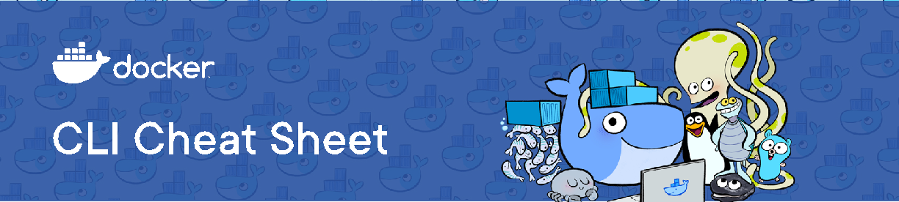
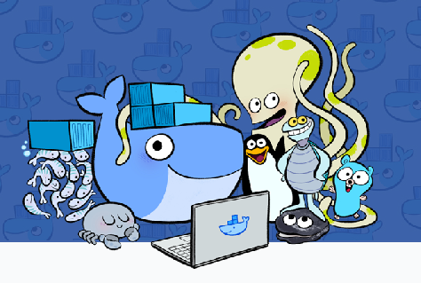

Docker provides the ability to package and run an application in a loosely isolated environment called a container. The isolation and security allows you to run many containers simultaneously on a given host. Containers are lightweight and contain everything needed to run the application, so you do not need to rely on what is currently installed on the host. You can easily share containers while you work, and be sure that everyone you share with gets the same container that works in the same way.
View example projects that use Docker https://github.com/docker/awesome-compose
GENERAL COMMANDS
Start the docker daemon docker -d
Get help with Docker. Can also use –help on all subcommands docker --help
Display system-wide information docker info
Docker images are a lightweight, standalone, executable package of software that includes everything needed to run an application: code, runtime, system tools, system libraries and settings.
docker build -t
Build an Image from a Dockerfile without the cache docker build -t
List local images docker images
Delete an Image docker rmi
Docker Hub is a service provided by Docker for finding and sharing container images with your team. Learn more and find images at https://hub.docker.com
Login into Docker docker login -u
Publish an image to Docker Hub docker push
Search Hub for an image docker search
Pull an image from a Docker Hub docker pull
A container is a runtime instance of a docker image. A container will always run the same, regardless of the infrastructure. Containers isolate software from its environment and ensure that it works uniformly despite differences for instance between development and staging.
Create and run a container from an image, with a custom name: docker run --name
Run a container with and publish a container’s port(s) to the host. docker run -p
Start or stop an existing container: docker start|stop
Remove a stopped container: docker rm
Open a shell inside a running container: docker exec -it
Fetch and follow the logs of a container: docker logs -f
To inspect a running container: docker inspect
To list currently running containers: docker ps
List all docker containers (running and stopped): docker ps --all
View resource usage stats docker container stats